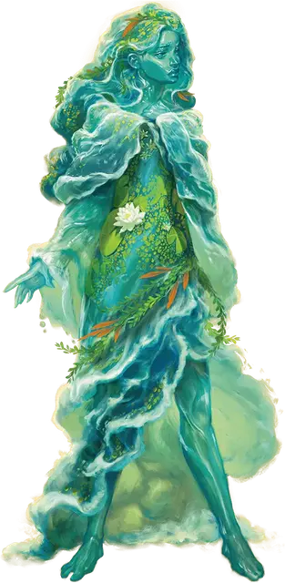

Наяда
Naiad
Средняя Фея, хаотично-нейтральная

Класс Доспеха 15 (природный доспех)
Хиты 31 (7к8)
Скорость 30 футов, плавая 30 футов
| мод | спас | ||
|---|---|---|---|
| СИЛ | 10 | +0 | +0 |
| ЛОВ | 16 | +3 | +3 |
| ТЕЛ | 11 | +0 | +0 |
| мод | спас | ||
|---|---|---|---|
| ИНТ | 15 | +2 | +2 |
| МДР | 10 | +0 | +0 |
| ХАР | 18 | +4 | +4 |
Навыки Ловкость рук +5, Убеждение +6
Сопротивление урону психическая энергия
Иммунитет к урону яд
Иммунитет к состояниям испуг, отравление, очарование
Чувства пассивное Восприятие 10
Языки Общий, Сильван
Опасность 2 (450 опыта)
Бонус мастерства +2
Особенности
Амфибия. Наяда может дышать и воздухом и под водой.
Врождённое колдовство. Базовой характеристикой наяды является Харизма (Сл спасброска от заклинания 14). Наяда может накладывать следующие заклинания, не нуждаясь в материальных компонентах:
• Неограниченно: малая иллюзия [minor illusion];
• 3/день: воображаемая сила [phantasmal force];
• 1/день каждое: полёт [fly], гипнотический узор [hypnotic pattern].
Сопротивление магии. Наяда совершает с преимуществом спасброски от заклинаний и прочих магических эффектов.
Невидим в воде. Наяда невидима, когда полностью погружен в воду.
Действия
Мультиатака. Наяда совершает два Психических прикосновения.
Психическое прикосновение. Рукопашная атака заклинанием: +6 к попаданию, досягаемость 5 футов., одна цель. Попадание: 9 (1к10 + 4) урона психической энергией.
Описание
Наяды живут в воде и рядом с ней. Их можно заметить среди рек и озер, на изолированных берегах или среди коралловых лабиринтов и глубоководных фумарол. Везде, где реки и моря демонстрируют свое разнообразие и силу, наяды собираются, чтобы насладиться мощью природы. Отдельные наяды часто становятся зацикленными на одном типе или водоеме, потенциально предпочитая глубоководную впадину, береговую линию или речную систему всем остальным. Со временем такая местная нимфа часто становится связанной со своим водным домом посредством наблюдений и историй, становясь стражем этого места и, по сути, проявлением его индивидуальности.
Водные коллекционеры. Любопытные по натуре, наяды часто ищут то, на что претендуют моря и реки. В результате их можно найти среди затонувших руин и кораблекрушений, когда они просматривают останки в поисках того, что бросается им в глаза. Живые существа тоже не свободны от этого любопытства. Известно, что наяды дружат с водными существами или даже содержат скромные зверинцы. Известно, что потерпевшие кораблекрушение даже становились частью таких коллекций.
Тайные морские пути. Моряки по всему миру утверждают, что наяды знают все тайные водные маршруты Тероса. Используя эту скрытую систему течений и артерий, корабль может достичь любого пункта назначения в рекордно короткие сроки, будь то через море или вдоль реки в сотне миль от берега. Наяды ничего не делают, чтобы разубедить моряков в этой вере, и, конечно же, многочисленные сообщения рассказывают о очаровательных нимфах, ведущих заблудших моряков домой. И все же, если рассказы о галерах, ведомых наядами, появляющихся в верховьях горных рек, правдивы, только нимфы знают наверняка.
Нимфы
Божественные слуги, обитающие в нетронутых уголках мира, нимфы защищают места природной силы и наполняют свое окружение магией Нюкты. Некоторые из них доброжелательны и помогают тем, кто живет за счёт земли, в то время как другие воплощают жестокие аспекты природы. В любом случае, нимфы обычно избегают других разумных существ, предпочитая помнить о циклах природы, ежедневном взаимовлиянии диких животных или других космических силах. Иногда, однако, группы нимф одного и того же вида собираются в месте естественной силы или красоты. Во времена особой нужды божества, связанные с аспектами природы, могли использовать нимф в качестве посланников, хранителей или разведчиков.
Бессмертная природа. Нимфе не нужны еда, питьё или сон.